Appartement Mitte · Intérieur, rénovation, novembre 2025
Real estate storytelling space

Le contexte. Un appartement de 69,9 m² au 2ᵉ étage d'un immeuble Altbau des années 1920, à Berlin-Mitte. De vrais atouts : plafonds à 3,20 m, une exposition ouest offrant une belle lumière de fin de journée, un balcon avec vue dégagée. Mais une distribution en « peigne » qui dessert mal l'appartement : un long couloir aveugle en tunnel, une cuisine mal reliée aux pièces de vie, et des sols fragmentés par une succession de matériaux différents d'une pièce à l'autre.
L'intention. Installer une direction artistique « Modern Berlin » / Warm Minimal : un minimalisme chaleureux, des lignes épurées, une atmosphère premium proche du quiet luxury. Matières brutes et texturées (laine bouclée, bois), verrière en verre strié, chaise Wassily en contrepoint métallique, éclairage indirect chaud à 2700K.
La stratégie. Un sol unique et continu déployé sur les 70 m², qui met fin au mélange carrelage / moquette / stratifié. Des ouvertures vitrées percées dans le couloir pour casser l'effet tunnel et faire entrer la lumière ouest jusqu'au cœur du plan. Des rangements sur-mesure intégrés au couloir pour récupérer les mètres carrés jusque-là perdus.
Le résultat. Une approche à la croisée du design spatial, de l'image et du marketing : des espaces pensés pour être vécus autant que perçus, photographiés, filmés, avec une attention particulière portée à l'évolution de la lumière naturelle au fil de la journée.
Avant / après le plan
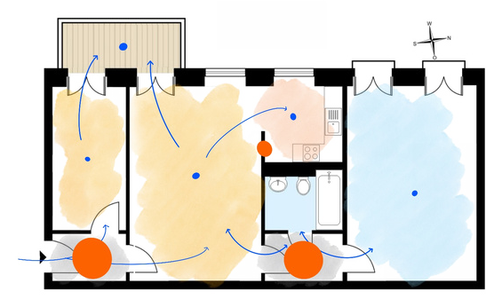
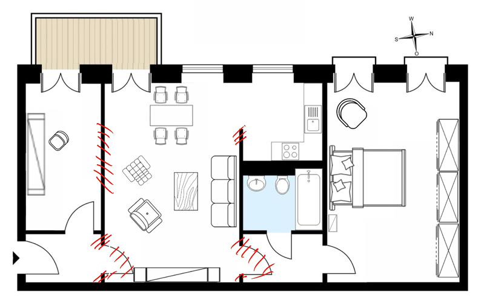
Pièce par pièce
Salon
Quiet luxury : verrière en verre strié pour délimiter sans cloisonner, chaise Wassily en contraste métallique, éclairage indirect chaud à 2700K.
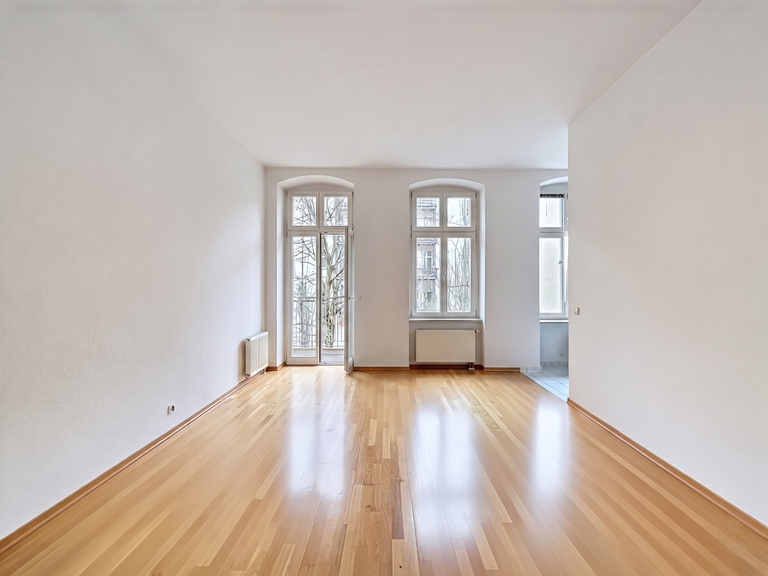
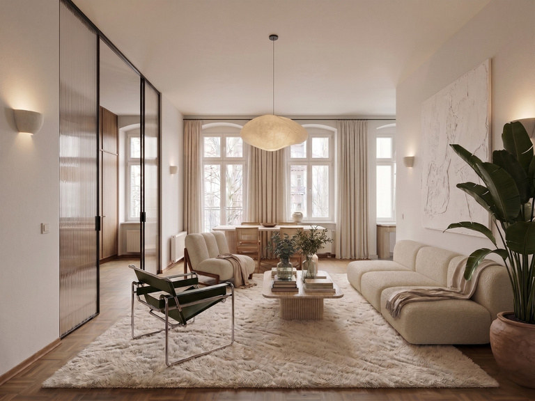
Bureau / couloir
Bureau suspendu en chêne, claustra en verre strié à cadre noir, laine bouclée et tapis tufté, végétation sculpturale. L'ancien couloir tunnel devient un espace de vie à part entière.
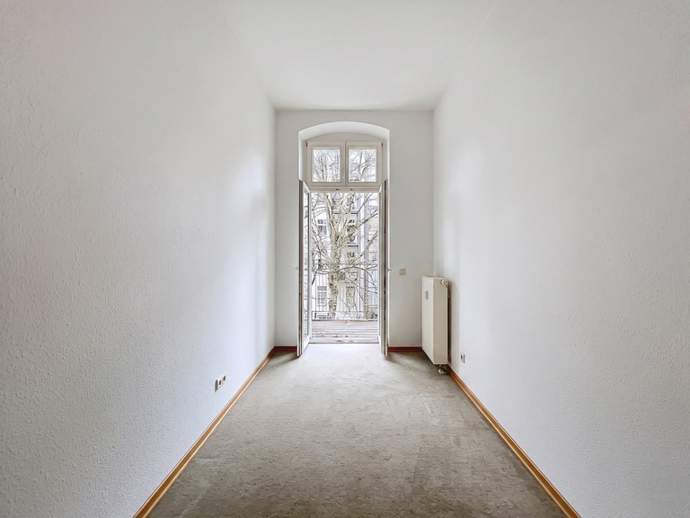
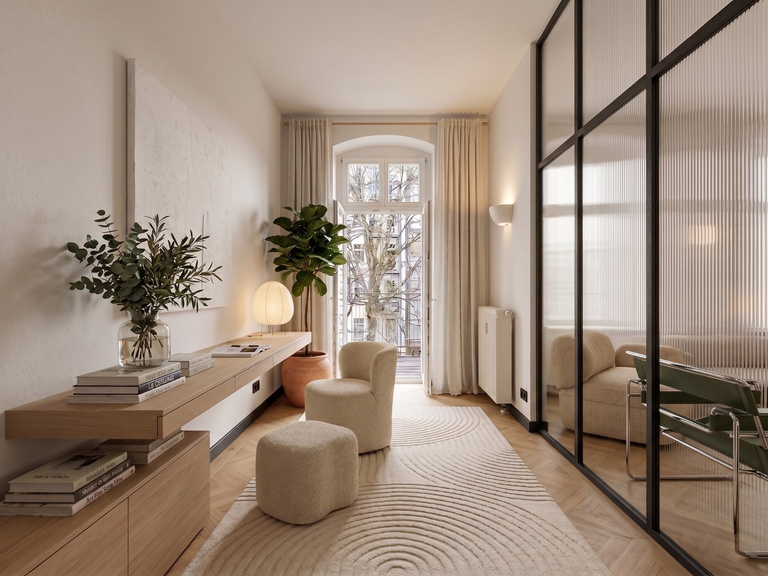
Chambre
Palette monochrome : laine bouclée, lin lavé, parquet chevron. Rangements en chêne et verre strié exploitant les 3,20 m sous plafond, appliques murales à 2700K, ficus et toile abstraite.
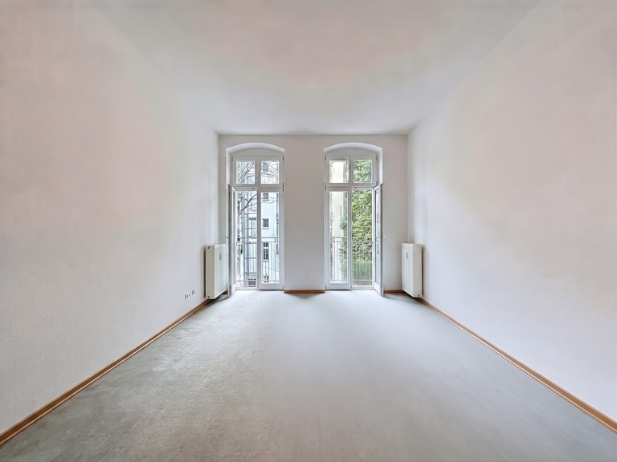
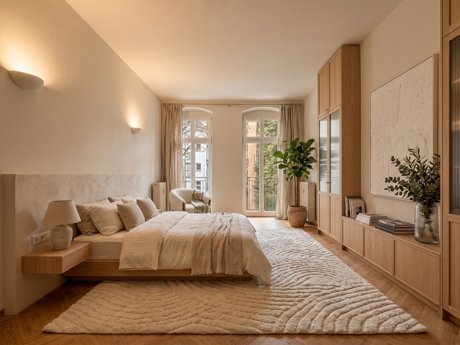
Évolution de la lumière
Le salon a été pensé pour épouser la course du soleil, exposition ouest : lumière froide et posée le matin, clarté douce en journée, embrasement chaleureux au coucher du soleil. Une même pièce, trois ambiances, la même attention aux matières et à la profondeur visuelle.
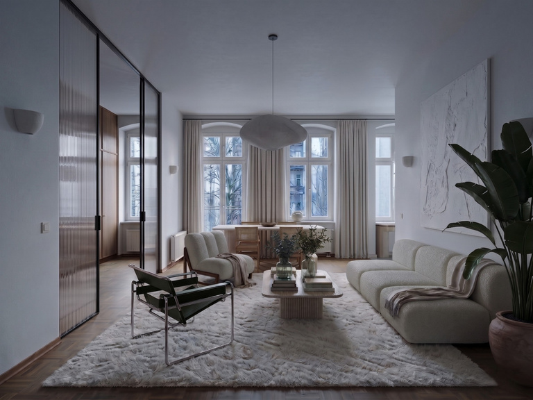
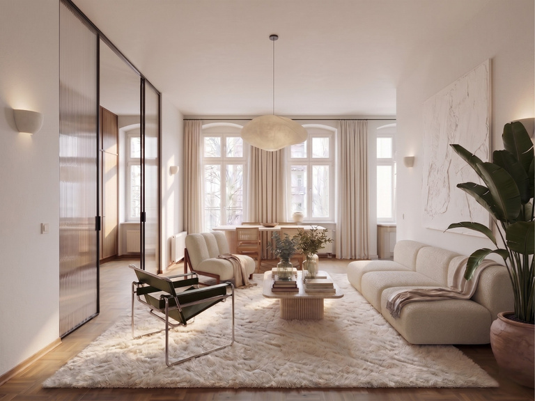
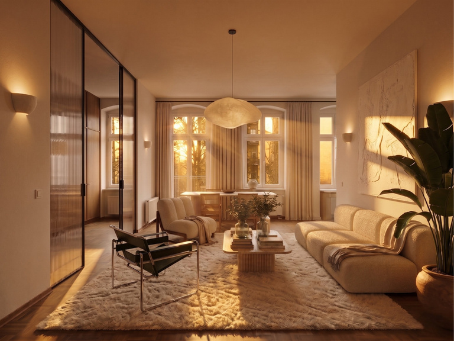